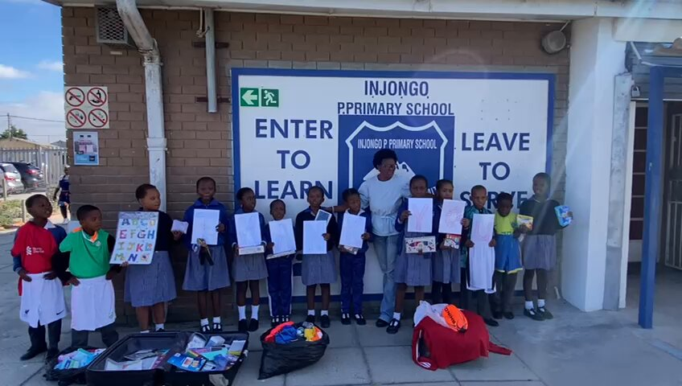

Our Vision & Mission
Our Vision
We at Injongo Primary School strive for excellence in education through teaching and learning with a holistic approach that will produce acceptable and responsible South African citizens. We inspire a love of learning, creativity, and critical thinking, empowering our students to become compassionate, confident, and courageous individuals who make a positive impact in the world through innovative teaching, collaborative learning, and a commitment to excellence.
- Equipping learners with necessary skills
- Educational and life skills
Our Mission
Our mission at Injongo Primary School is to provide a supportive and inclusive learning environment that fosters a love of learning and academic excellence, builds strong relationships, and a sense of community among students, teachers, parents, and the wider community. We prepare students for success in an ever-changing world, focusing on adaptability, resilience, and determination.
Through our mission, we aim to empower our students to become active learners, responsible citizens, and future leaders making a positive impact in their communities and the world at large.